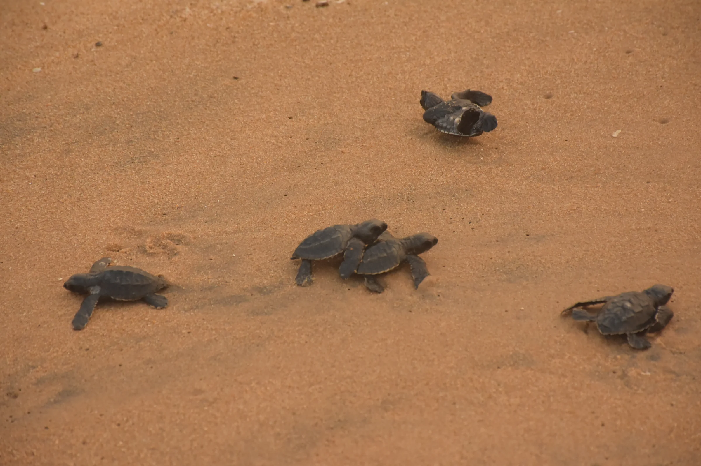

TurtleGuard helps authorised conservation teams understand artificial-light and thermal conditions at olive ridley rookeries - locally, explainably, and with people making the final call.
TurtleGuard is an edge-based sensor-fusion and risk-scoring system designed to help authorised conservation teams assess two interconnected conditions at olive ridley rookeries: artificial light that may disrupt hatchlings' seaward orientation, and thermal conditions associated with incubation risk.
The prototype combines directional horizon brightness, light-source visibility, spectral measurements, local weather context, and non-invasive sand-temperature proxies. When authorised passive footage is available, reviewed movement trajectories can help evaluate the optical score. Every result exposes its contributing measurements and data-quality status for human review.
What it observes
One shoreline. Two signal families.
A single lux reading or surface-temperature snapshot misses direction, spectrum, cloud, shade, moisture, depth, and other context. TurtleGuard brings those signals together without hiding the underlying measurements.
01◉
Optical context
Directional brightness and the visibility, spectrum, and position of light sources near the seaward horizon.
Horizon-sector brightness
Visible-light spectrum
Optional reviewed trajectories
02≈
Thermal context
Non-invasive, multi-depth sand-temperature proxies interpreted with air, humidity, weather, and local site context.
Multi-depth calibration plots
Weather and humidity context
Quality-gated proxy indicators
03⌁
Edge intelligence
Local acquisition and analysis keep the workflow usable at field sites while making uncertainty explicit.
Offline-capable processing
Explainable risk indicators
Alerts for human review
1AcquireCapture local signals
→
2Quality gateFlag weak or missing data
→
3InterpretBuild transparent indicators
→
4ReviewSupport expert judgement
Field notes
From bench idea to shoreline prototype.
01 / 05
01
Facing the seaward horizonBateswar Beach · Prototype station
Photograph by the authors
02
Preparing the stationBateswar Beach · Field team
Photograph by the authors
03
Placing the sand probesNew Podampeta · Shoreline setup
Photograph by the authors
04
An adult olive ridleyRushikulya rookery · Odisha
Photograph by the authors

05
Toward the open seaRushikulya rookery · Hatchlings
Photograph by the authors
02
Know more
The thinking behind the prototype.
Explore the project architecture, scientific context, field setup, limitations, and proposed validation pathway in the team's source documents.
RESEARCH PAPER
TURTLEGUARD · 2026
PDF19 pages45 MB
TurtleGuard research paper
A detailed account of the problem framing, sensing architecture, explainable scoring approach, field prototype, and study limitations.
*
These documents present prototype research and a proposed validation framework. They should not be read as evidence of a completed longitudinal field trial.
About us
Two researchers. One guiding mentor.
TurtleGuard is developed at DAV Public School Unit VIII, Bhubaneswar, with a shared interest in field-ready, explainable conservation technology.
01
SL
Student researcher · Co-author
Suryakanta Lenka
Student researcher at DAV Public School Unit VIII, Bhubaneswar.